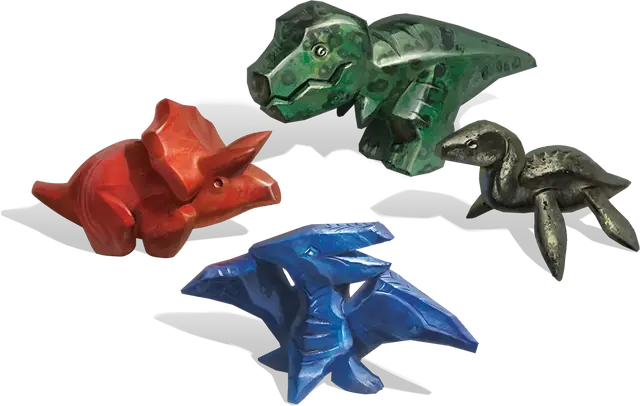

Доисторические статуэтки чудесной силы
Prehistoric Figurines of Wondrous Power
Чудесный предмет, редкость варьируется (зависит от статуэтки)

Эти статуэтки, более крупные и грубо вытесанные, чем обычные статуэтки чудесной силы [figurine of wondrous power], изображают динозавров и родственных им существ из самых ранних дней существования мира.
Вы можете действием бросить доисторическую статуэтку чудесной силы в точку на земле в пределах 60 футов от себя, произнося командное слово, после чего статуэтка волшебным образом превращается в живое существо. Если место, где должно появиться существо, занято другими существами или предметами, или если для существа недостаточно места, статуэтка не становится существом.
Существо дружелюбно к вам и вашим спутникам. Он понимает известные вам языки и подчиняется вашим голосовым командам. Если вы не отдаете никаких команд, существо защищается, но не предпринимает никаких других действий.
Длительность существования призванных существ зависит от конкретного вида статуэтки. В конце этой длительности существо возвращается к своей форме статуэтки. Оно превращается в статуэтку раньше, если его хиты опускаются до 0 или если вы действием снова произнесёте командное слово, касаясь его. Когда существо снова становится статуэткой, её свойства нельзя использовать снова, пока не пройдет определённое время, указанное в описании статуэтки.
Сердоликий трицератопс (очень редкий). Эта статуэтка превращается в трицератопса [triceratops] на срок до 6 часов, и на нём можно ездить верхом. После того, как она была использована, её нельзя использовать снова, пока не пройдет 10 дней.
Яшмовый Тираннозавр Рекс (Легендарный). Эта статуэтка, изготовленная из редкой зелёной яшмы, превращается в тираннозавра [tyrannosaurus rex] на срок до 1 часа. После того, как она была использована, его нельзя использовать снова, пока не пройдет 14 дней.
Всякий раз, когда вы командуете статуэткой, пока она находится в форме тираннозавра рекса (включая команду вернуться в форму статуэтки), вы должны бросить к20. На «1» вы теряете контроль над статуэткой, и она становится враждебной по отношению к вам и вашим спутникам, пока ее хиты не упадут до 0, после чего она возвращается в форму статуэтки.
Кианитовый птеранодон (редкий). Эта статуэтка становится птеранодоном [pteranodon] на срок до 8 часов. Если вы Среднего размера или меньше, вы можете ездить на птеранодоне в качестве ездового животного. После того, как она была использована, её нельзя использовать снова, пока не пройдет 7 дней.
Пиритовый плезиозавр (необычный). Эта статуэтка превращается в плезиозавра [plesiosaurus] на срок до 12 часов, и на нём можно ездить верхом. После того, как она была использована, её нельзя использовать снова, пока не пройдет 4 дня.
Пока вы едете верхом на плезиозавре, вы можете использовать его для накладывания подводного дыхания [water breathing] по своему желанию.